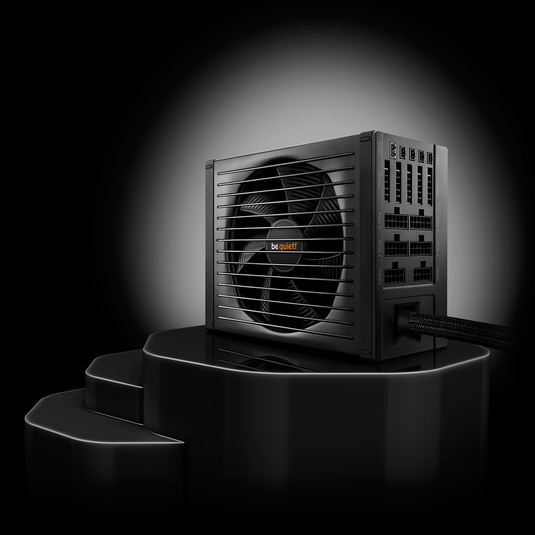

It is a fact of the modern world that high technology requires constant refinement
and unending improvement — and that is even truer for those who would be leaders.
Dark Power Pro power supplies are renowned as the world's quietest and most efficient
high-performance PSUs. The Dark Power Pro 11 model takes that a step further with a
power conversion topology that delivers 80 PLUS® Platinum performance, add to that
an unparalleled array of enhancements that augment this unit's compatibility,
convenience of use, reliability, and safety, and the result is the most technologically-advanced
power supply be quiet! has ever built.
Read More
Return